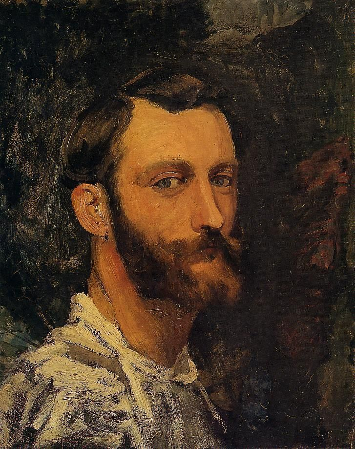
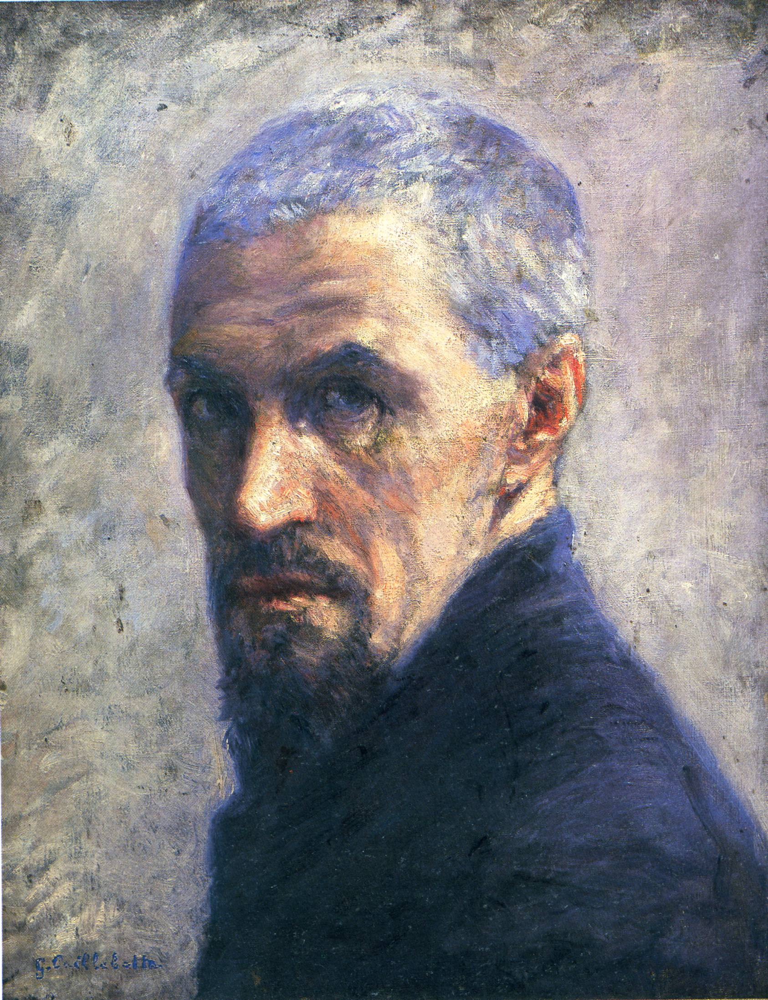

Main Impressionists
The central figures in the development of Impressionism in France, listed alphabetically, were:

- Frédéric Bazille
(who only posthumously participated in the Impressionist exhibitions) (1841–1870)
- Gustave Caillebotte
(who, younger than the others, joined forces with them in the mid-1870s) (1848–1894)

- Mary Cassatt
(American-born, she lived in Paris and participated in four Impressionist exhibitions) (1844–1926)
- Paul Cézanne
(although he later broke away from the Impressionists) (1839–1906)
- Edgar Degas
(who despised the term Impressionist) (1834–1917)
- Armand Guillaumin
(1841–1927)
- Édouard Manet
(who did not participate in any of the Impressionist exhibitions) (1832–1883)
- Claude Monet
(the most prolific of the Impressionists and the one who embodies their aesthetic most obviously) (1840–1926)
- Berthe Morisot
(1841–1895)
- Camille Pissarro
(1830–1903)
- Pierre-Auguste Renoir
(1841–1919)
- Alfred Sisley
(1839–1899))